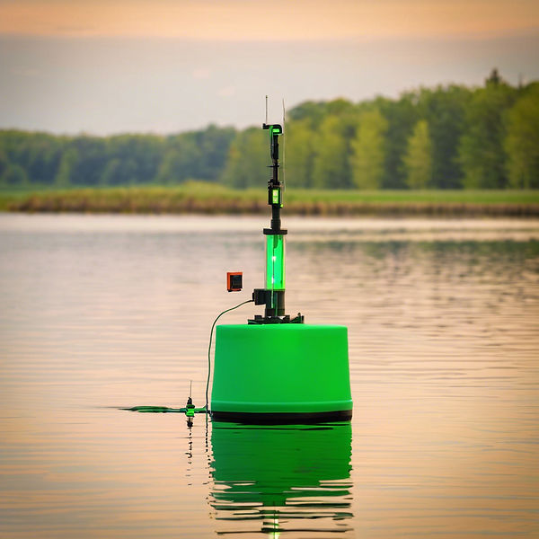

Our Technology
A modular, IoT-powered water quality monitoring system built for real-time deployment across any waterway.

Capabilities
Purpose-built technology that enables organisations to monitor and manage water quality affordably, reliably, and sustainably.
Platform designed for field deployment with configurable sensor architecture. Enables organisations to monitor and manage water quality affordably, reliably, and sustainably.
Integrates with IoT sensor systems seamlessly, providing accessible analytics anywhere, anytime. Real-time data streaming from field to dashboard.
Deployable via unmanned surface vehicles on lakes and rivers. Minimal infrastructure required — AMWA operates autonomously once deployed.
Leverages analytics for continuous refinement. Delivers proactive and cost-effective water quality management through AI-driven insights.
Common Questions
We focus on modular, autonomous tools for real-time, multipoint water monitoring. Our solutions are designed for sustainable management across government, industry, and community sectors.
AMWA integrates IoT-enabled passive multiparameter sensors with advanced analytics, enabling faster and more informed decision-making and proactive waterway management — replacing delayed lab results with real-time intelligence.
AMWA uses modular, autonomous tools that reduce personnel dependence while promoting cost-effective practices. The system enables proactive environmental management rather than reactive intervention.
Absolutely. Our team collaborates closely with each client to ensure solutions are tailored to their specific requirements and cost considerations.
AMWA integrates IoT, AI, unmanned surface vehicles, and smart sensors to enable comprehensive remote monitoring capabilities across any waterway environment.
Simply reach out to us through our website or contact our office. We'll work with you to understand your monitoring needs and design a solution that fits.
Learn how AMWA can transform your water quality monitoring operations.
Get in Touch